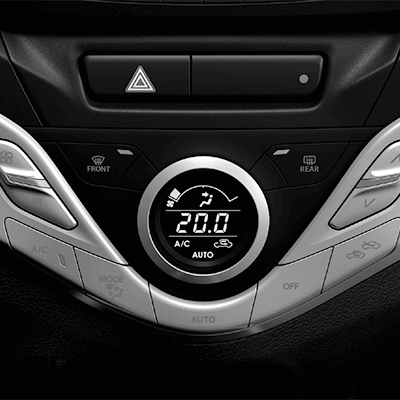

尊榮環艙體驗
就從上車的那刻起
延續流水設計主題的寬敞座艙，以曲線線條水平向外擴散的儀表板設計，搭配格調一致的偏紅琥珀色背光，讓您在駕馭過程中感受無盡尊榮。
除有體貼人性化的自動恆溫空調系統，更於儀表板獨家搭載高畫質4.2吋彩色LCD多功能資訊顯示幕，包含節能資訊、車輛動態紀錄、引擎輸出等紀錄顯示，便於您輕鬆掌握行車動態表現。
除有體貼人性化的自動恆溫空調系統，更於儀表板獨家搭載高畫質4.2吋彩色LCD多功能資訊顯示幕，包含節能資訊、車輛動態紀錄、引擎輸出等紀錄顯示，便於您輕鬆掌握行車動態表現。

自動空調面板